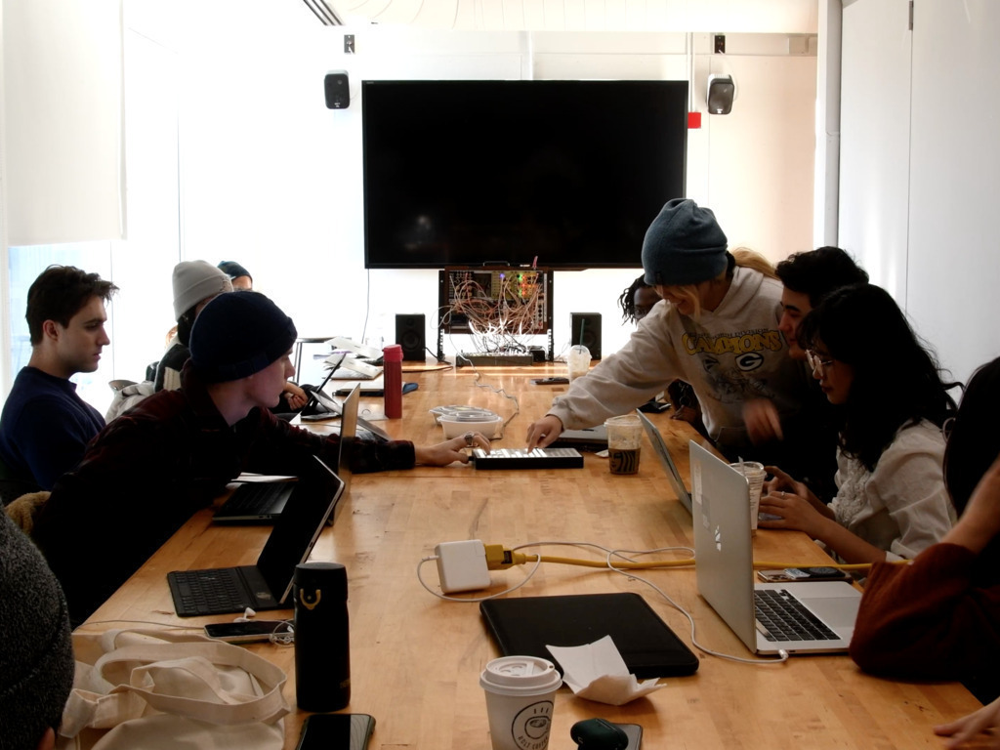

Grid Ops Binary Left Shift Rotating

Watch the performance
Listen to the performance
Interactive performance for According to Chance Wintersession Class at RISD using the Monome Grid and my Eurorack Modular
incoming gear


Watch the performance
Listen to the performance
Interactive performance for According to Chance Wintersession Class at RISD using the Monome Grid and my Eurorack Modular
incoming gear